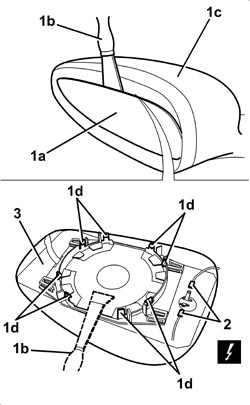

7005R35 DOOR MIRROR REFLECTOR (ONE), LEFT OR RIGHT - R.R
- Path
- Procedures > 70 FITTINGS > 7005 PASSENGER COMPARTMENT FRONT SIDE DOORS > 7005R FRONT DOOR MIRRORS > 7005R35 DOOR MIRROR REFLECTOR (ONE), LEFT OR RIGHT - R.R
- Kind
- repair procedure (removal / refitting; the operation number is the code)
- Applies to
- all engines; all production periods
- Interactive page
- https://sloeber94.github.io/elrnDB/alfa/159/en/#/939011151
Applies to: all engines; all production periods
 Removing
Removing
 Refitting
Refitting1. Tilt the reflector (1a) downwards until it is in the end of travel position, then insert a plastic blade (1b) between the reflector (1a) and the shell (1c) and release the reflector retainers (1d) from the inner circular support.
2. Disconnect the electrical connections for the reflector defroster.
3. Keep the reflector.

Applies to: all engines; all production periods
Refitting
Removing- Check that the reflector is not damaged.
- Connect the electrical connections for the reflector defroster.
- Position the reflector and attach the retainers.
- Check that the reflector is working.